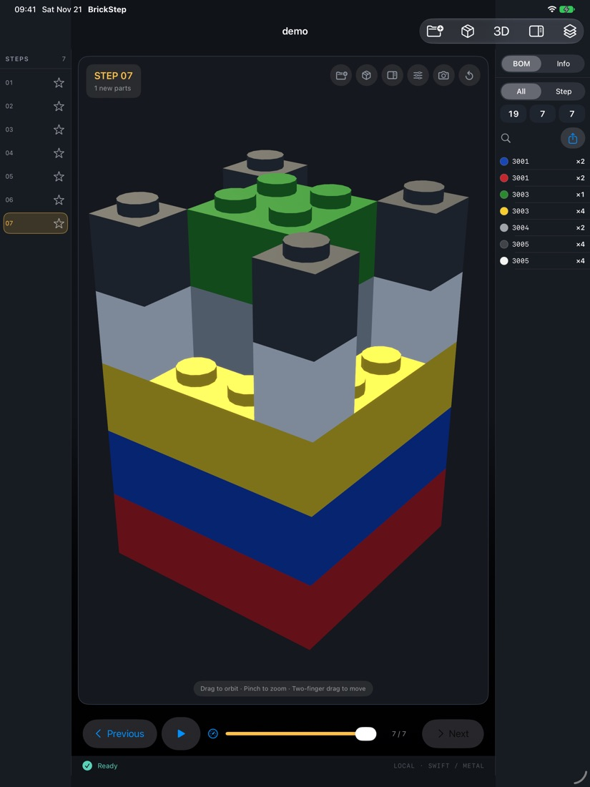
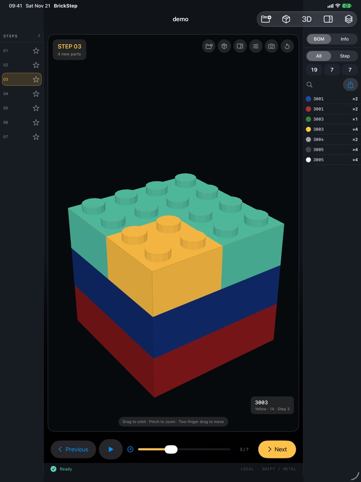
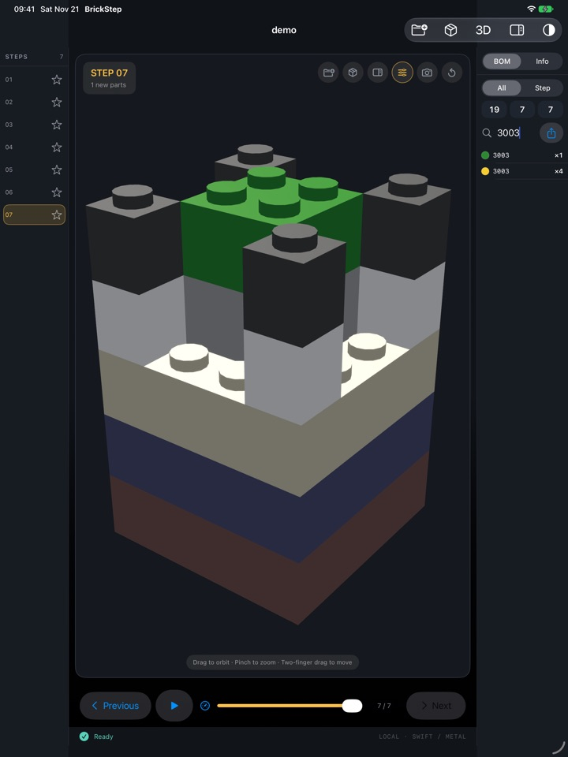
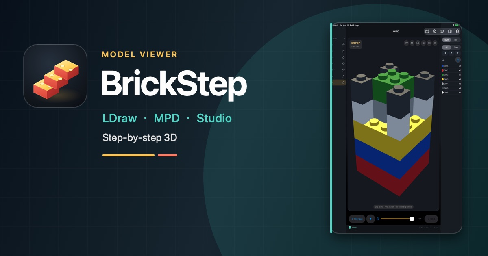

Bill of materials
Search parts and colors for the whole model or the current step, then export the list as CSV.
Local 3D model viewer
Open local LDraw, MPD, and BrickLink Studio models in step-by-step 3D.
Review building steps in 3D, inspect individual parts, and export the parts list you need. Model parsing and view preparation happen on the device.
Available now on the U.S. App Store
Current release: iPadOS 18+ and U.S. App Store. The App Store listing and YouTube video are currently in English.

BrickStep reads local LDraw, MPD, and BrickLink Studio files from Files, iCloud Drive, and other document providers. It works with both single-step models and long, multi-step building sequences.
An optional external LDraw library adds detailed part geometry. Access stays limited to the folder you choose.
These screens use BrickStep's bundled demonstration model. Switch between the model view, matching-part highlights, and the searchable parts list.


Search parts and colors for the whole model or the current step, then export the list as CSV.
Merged step batches and lazy geometry assembly keep detailed models responsive on modern devices.
No account, subscription, advertising, analytics, or cross-app tracking. Model data stays on the device.
A focused workspace with step and inspector columns, direct gestures, and camera presets.

Watch the short demonstration of opening a model, reviewing building steps, finding matching parts, and checking the parts list.
Visit BrickStep Support for file and library guidance, or email 13911100061@163.com.
Read the BrickStep Privacy Policy.
BrickStep is available through the U.S. App Store. The current release requires iPadOS 18 or later.